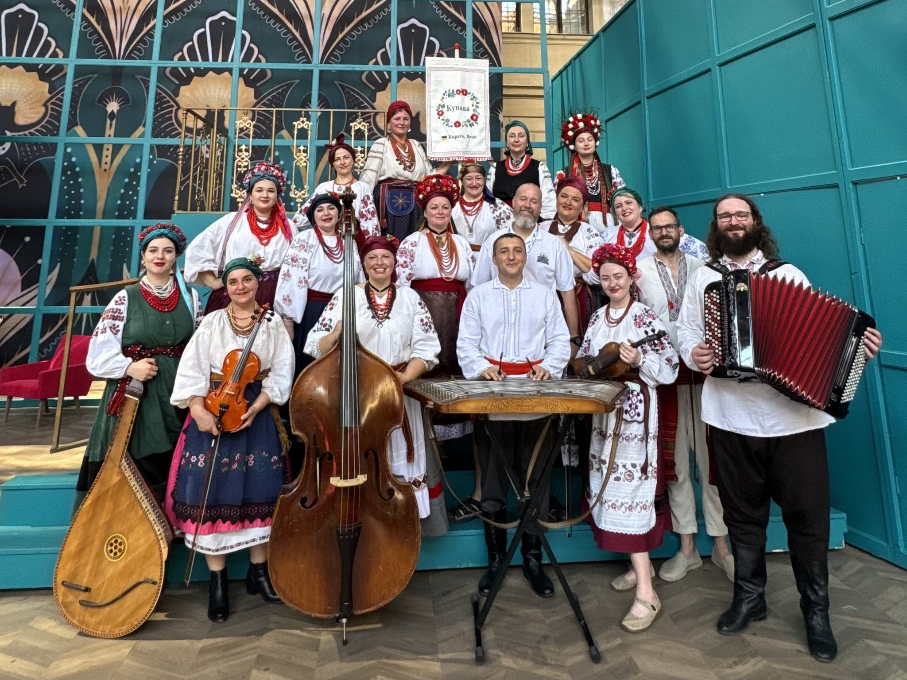

Aktuality ·
Kupava na festivalu Smetanova Litomyšl
27. června 2026 vystoupila Kupava v programu Festivalové zahrady na festivalu Smetanova Litomyšl.

V sobotu 27. června 2026 jsme vystoupili v rámci programu Festivalové zahrady na festivalu Smetanova Litomyšl. Zazněly ukrajinské lidové písně v tradičním vícehlasu za doprovodu živé hudby.
Vystoupení na jednom z nejvýznamnějších hudebních festivalů v Česku si velmi vážíme a děkujeme za pozvání.
Kontakt ← Zpět na hlavní stránku